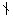
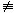
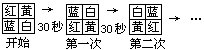
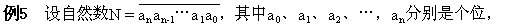
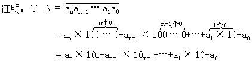

第五讲 同余的概念和性质
你会解答下面的问题吗？
问题1：今天是星期日，再过15天就是“六·一”儿童节了，问“六·一”儿童节是星期几？
这个问题并不难答.因为，一个星期有7天，而15÷7=2…1，即15＝7×2+1，所以“六·一”儿童节是星期一。
问题2：1993年的元旦是星期五，1994年的元旦是星期几？
这个问题也难不倒我们.因为，1993年有365天，而365=7×52+1，所以1994年的元旦应该是星期六。
问题1、2的实质是求用7去除某一总的天数后所得的余数.在日常生活中，时常要注意两个整数用某一固定的自然数去除，所得的余数问题.这样就产生了“同余”的概念.如问题1、2中的15与365除以7后，余数都是1，那么我们就说15与365对于模7同余。
同余定义：若两个整数a、b被自然数m除有相同的余数，那么称a、b对于模m同余，用式子表示为：
a≡b（modm）. （*）
上式可读作：
a同余于b，模m。
同余式（*）意味着（我们假设a≥b）：
a-b=mk，k是整数，即m｜（a-b）.
例如：①15≡365（mod7），因为365-15=350=7×50。
②56≡20（mod9），因为56-20=36＝9×4。
③90≡0（mod10），因为90-0＝90=10×9。
由例③我们得到启发，a可被m整除，可用同余式表示为：a≡0（modm）。
例如，表示a是一个偶数，可以写
a≡0（mod 2）
表示b是一个奇数，可以写
b≡1（mod 2）
补充定义：若m（a-b），就说a、b对模m不同余，用式子表示是：
ab（modm）
我们书写同余式的方式，使我们想起等式，而事实上，同余式与等式在其性质上相似.同余式有如下一些性质（其中a、b、c、d是整数，而m是自然数）。
性质1：a≡a（mod m），（反身性）
这个性质很显然.因为a-a=0=m·0。
性质2：若a≡b（mod m），那么b≡a（mod m），（对称性）。
性质3：若a≡b（mod m），b≡c（mod m），那么a≡c（mod m），（传递性）。
性质4：若a≡b（mod m），c≡d（mod m），那么a±c≡b±d（mod m），（可加减性）。
性质5：若a≡b（mod m），c≡d（mod m），那么ac≡bd（mod m）（可乘性）。
性质6：若a≡b（mod m），那么an≡bn（mod m），（其中n为自然数）。
性质7：若ac≡bc（mod m），（c，m）=1，那么a≡b（mod m），（记号（c，m）表示c与m的最大公约数）。
注意同余式性质7的条件（c，m）＝1，否则像普通等式一样，两边约去，就是错的。
例如6≡10（mod 4），而35（mod 4），因为（2，4）≠1。
请你自己举些例子验证上面的性质。
同余是研究自然数的性质的基本概念，是可除性的符号语言。
例1 判定288和214对于模37是否同余，74与20呢？
解：∵288-214=74=37×2。
∴288≡214（mod37）。
∵74-20=54，而3754，
∴7420（mod37）。
例2 求乘积418×814×1616除以13所得的余数。
分析 若先求乘积，再求余数，计算量太大.利用同余的性质可以使“大数化小”，减少计算量。
解：∵418≡2（mod13），
814≡8（mod13），1616≡4（mod13），
∴ 根据同余的性质5可得：
418×814×1616≡2×8×4≡64≡12（mod13）。
答：乘积418×814×1616除以13余数是12。
例3 求14389除以7的余数。
分析 同余的性质能使“大数化小”，凡求大数的余数问题首先考虑用同余的性质化大为小.这道题先把底数在同余意义下变小，然后从低次幂入手，重复平方，找找有什么规律。
解法1：∵143≡3（mod7）
∴14389≡389（mod 7）
∵89＝64+16+8+1
而32≡2（mod 7），
34≡4（mod7），
38≡16≡2（mod 7），
316≡4（mod 7），
332≡16≡2（mod 7），
364≡4（mod 7）。
∵389≡364·316·38·3≡4×4×2×3≡5（mod 7），
∴14389≡5（mod 7）。
答：14389除以7的余数是5。
解法2：证得14389≡389（mod 7）后，
36≡32×34≡2×4≡1（mod 7），
∴384≡（36）14≡1（mod 7）。
∴389≡384·34·3≡1×4×3≡5（mod 7）。
∴14389≡5（mod 7）。
例4 四盏灯如图所示组成舞台彩灯，且每30秒钟灯的颜色改变一次，第一次上下两灯互换颜色，第二次左右两灯互换颜色，第三次又上下两灯互换颜色，…，这样一直进行下去.请问开灯1小时四盏灯的颜色如何排列？

分析 与解答经观察试验我们可以发现，每经过4次互换，四盏灯的颜色排列重复一次，而1小时=60分钟=120×30秒，所以这道题实质是求120除以4的余数，因为120≡0（mod 4），所以开灯1小时四盏灯的颜色排列刚好同一开始一样。

十位，…上的数码，再设M=a0＋a1＋…＋an，求证：N≡M（mod 9）。
分析 首先把整数N改写成关于10的幂的形式，然后利用10≡1（mod 9）。

又∵ 1≡1（mod 9），
10≡1（mod 9），
102≡1（mod 9），
…
10n≡1（mod 9），
上面这些同余式两边分别同乘以a0、a1、a2、…、an，再相加得：
a0＋a1×10+a2×102+…+an×10n
≡a0＋a1＋a2＋…＋an（mod 9），
即 N≡M（mod 9）.
这道例题证明了十进制数的一个特有的性质：
任何一个整数模9同余于它的各数位上数字之和。
以后我们求一个整数被9除的余数，只要先计算这个整数各数位上数字之和，再求这个和被9除的余数即可。
例如，求1827496被9除的余数，只要先求（1+8＋2＋7＋4＋9＋6），再求和被9除的余数。
再观察一下上面求和式.我们可以发现，和不一定要求出.因为和式中1＋8，2+7，9被9除都余0，求余数时可不予考虑.这样只需求4＋6被9除的余数.因此，1827496被9除余数是1。
有人时常利用十进制数的这个特性检验几个数相加、相减、相乘的结果对不对，这种检查方法叫：弃九法。
弃九法最经常地是用于乘法.我们来看一个例子。
用弃九法检验乘式5483×9117≡49888511是否正确？
因为 5483≡5＋4＋8＋3≡11≡2（mod 9），
9117≡9＋1＋1＋7≡0（mod 9），
所以 5483×9117≡2×0≡0（mod 9）。
但是 49888511≡4+9＋8+8+8＋5+1+1
≡8（mod9），
所以 5483×9117≠49888511，即乘积不正确。
要注意的是弃九法只能知道原题错误或有可能正确，但不能保证一定正确。
例如，9875≡9＋8+7+5≡2（mod 9），
4873≡4＋8＋7＋3≡4（mod 9），
32475689≡3+2+4+7＋5+6+8+9
≡8（mod 9），
这时，9875×4873≡2×4≡32475689（mod 9）。
但观察个位数字立刻可以判定9875×4873≠32475689.因为末位数字5和3相乘不可能等于9。
弃九法也可以用来检验除法和乘方的结果。
例6 用弃九法检验下面的计算是否正确：
23372458÷7312＝3544。
解：把除式转化为：
3544×7312＝23372458。
∵ 3544≡3＋5＋4＋4≡7（mod 9），
7312≡7＋3＋1＋2≡4（mod 9），
∴ 3544×7312≡7×4≡1（mod 9），
但 23372458≡2＋3＋3＋8≡7（mod 9）。
而 17（mod 9）
∴ 3544×7312≠23372458，
即 23372458÷7312≠3544。
例7 求自然数2100＋3101＋4102的个位数字。
分析 求自然数的个位数字即是求这个自然数除以10的余数问题。
解：∵2100≡24×25≡625≡6（mod 10），
3101≡34×25·31≡125·31≡3（mod 10），
4102≡（22）100·42≡6·6≡6（mod 10），
∴ 2100＋3101＋4102≡6＋3＋6≡5（mod 10），
即自然数2100＋3101＋4102的个位数字是5.